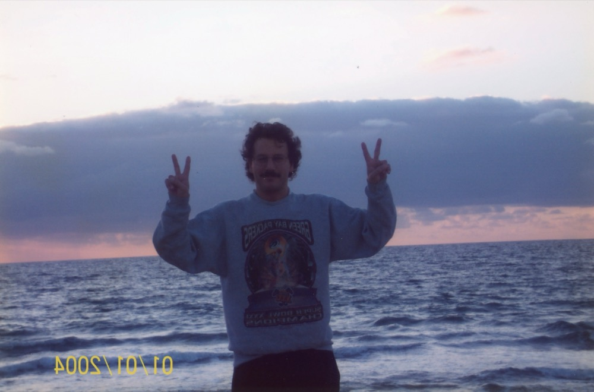
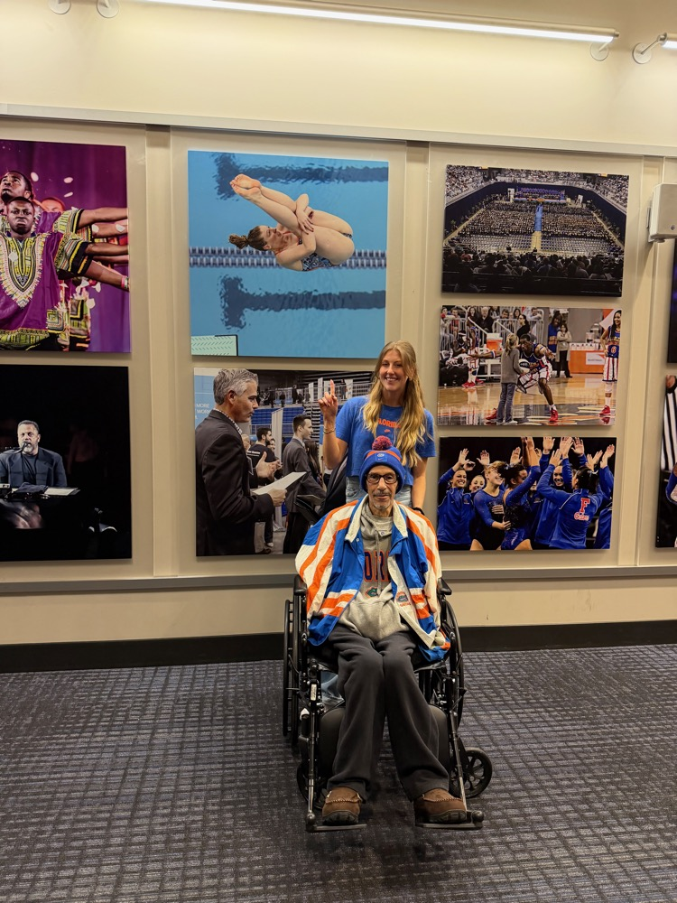

Devoted father. Fearless advocate. A lifetime fighting for others.
Explore his legacy
Practice Closure: The Law Offices of Richard Rosenbaum is no longer accepting new clients or matters. For previous case inquiries or referrals, please reach out below.
The Man
Before the Courtroom, There Was the Water
Richard Lawrence Rosenbaum was born on September 24, 1958 in Iowa City, Iowa and raised in South Bend, Indiana. From the beginning, he was someone who pushed limits.
At South Bend Regional High School, Richard was named an All-American swimmer and served as swim team captain, all while earning membership in the National Honor Society. He was a kid who could outwork anyone in the pool and outthink anyone in the classroom.
He went to Duke University, where he captained the swim team for two consecutive years and was named to the Atlantic Coast All-Conference Swim Team both seasons. But Richard wanted more. He transferred to the University of Florida to train under the 1980 Olympic Swimming Coach, where he lettered with the Gator Varsity Swim Team and was a member of the Amateur Athletic Union National Championship team for two years running.
In 1979, he represented the United States in international competition, racing in distance freestyle and butterfly against swimmers from East Germany, Canada, Spain, and England. That competitive fire — the refusal to back down, the drive to be the best — would define everything that came after.

Richard at the ocean, early days

Back at UF — where it all started
1958
Born in Iowa City, Iowa
~1976
All-American swimmer & team captain at S.B.R.H.S., National Honor Society
Duke
Two-year swim team captain, ACC All-Conference both years
UF
Trained under 1980 Olympic coach, Gator Varsity, 2x AAU National Champion
1979
Represented USA internationally in distance freestyle & butterfly
1984
Admitted to the Florida Bar
30+
Years of fearless legal advocacy
“The same fire that drove him through the water drove him through the courtroom — and through a twenty-six year battle with cancer. He never stopped fighting.”
The Attorney
A Career Built on Conviction & Courage
After earning his Juris Doctor from Nova Southeastern Law School, Richard began his legal career with an internship under Florida Supreme Court Justice Joseph A. Boyd, Jr. — an experience that shaped his deep reverence for the law and its power to protect the vulnerable.
Admitted to the Florida Bar in 1984 (Bar No. 394688), Richard built his practice from the ground up in Fort Lauderdale. He concentrated on appellate matters, criminal defense, family law, and civil litigation — and later added collegiate athlete sports law, drawing on his own experience as a competitive swimmer to advocate for student-athletes navigating NCAA, WADA, and USADA proceedings.
315+
Appeals as Attorney of Record
115 federal · 300+ state proceedings
30+
Years of Practice
Trial & appellate courts across Florida and federal jurisdictions
U.S. Supreme Court, 2nd, 3rd, 5th, 7th & 11th Circuits, Florida Bar
Admitted to Practice Before
U.S. Supreme Court2nd Circuit3rd Circuit5th Circuit7th Circuit11th CircuitFlorida Bar
Landmark Cases
The Cases That Defined His Legacy
Richard didn't shy away from the cases that other attorneys wouldn't touch. He ran toward complexity, controversy, and the cases where the stakes were highest.
Defining Case
The Lionel Tate Case
At just 12 years old, Lionel Tate became the youngest person in the United States sentenced to life in prison without parole. The case ignited a national conversation about juvenile justice, the treatment of children in adult courts, and the conscience of a legal system that would lock away a child forever.
Richard took the case and fought with everything he had. On December 10, 2003, the Fourth District Court of Appeal reversed the conviction, ruling that Tate's mental competency had never been properly evaluated before trial. His appellate work was instrumental in overturning Lionel's conviction — a victory that rippled through juvenile justice reform nationwide. In 2004, Richard was awarded the Unsung Hero Award specifically for his work protecting the rights of youth.
As part of the legal team defending baseball star Jose Canseco against charges of violating community control by testing positive for steroids in 2003, Richard helped navigate a high-profile case under intense media scrutiny. The charges were ultimately dropped.
The Kathy Willets Case
In one of South Florida's most sensational cases, Richard represented approximately two dozen "John Doe" defendants and filed a pioneering "Motion for Closure of Proceedings" to protect their privacy — a case that went all the way to the Florida Supreme Court.
Richard handled some of the most consequential appellate work in criminal law. He successfully appealed the death sentence of James Franklin Rose, securing a resentencing. He won reversal of William Strausser's death sentence, resulting in a life sentence. He also successfully appealed Jeffrey Weaver's conviction and served as penalty phase counsel for Omar Lourerio.
Danny Rolling
In the case of Danny Rolling — the "Gainesville Ripper" whose murders inspired the film Scream — Richard took on challenging constitutional law issues, including venue changes, suppression of evidence, and Fourth Amendment protections. Because he believed the Constitution protects everyone.
Richard was a trusted legal voice on the national stage. When the biggest cases in the country needed expert commentary, producers called Richard. His ability to break down complex legal issues with clarity and conviction made him a fixture across the major networks — from his early career through his final years, when CBS Miami turned to him repeatedly during the Nikolas Cruz / Parkland school shooting sentencing trial in 2022.
More than 30 years defending clients in complex felony cases at both state and federal levels. From white-collar crimes and RICO violations to violent felonies and misdemeanors, Richard's courtroom advocacy was relentless.
White Collar Crimes
RICO Act Violations
Violent Crimes & Major Felonies
Professional License Defense
Election Law & Ethics Complaints
Appeals
As attorney of record in over 315 appeals — 115 federal and 300+ state — Richard's appellate work generated numerous published opinions that shaped Florida and federal case law.
Federal & Florida Criminal Appeals
Federal Habeas Corpus (§2254, §2255)
Florida Rule 3.850 Motions
Post-Conviction Relief
Family Law
Richard brought the same intensity and personal attention to family matters, understanding that these cases shaped lives just as profoundly as any criminal proceeding.
Pre/Post-Nuptial Agreements
Child Custody & Time-Sharing
Alimony & Child Support
Domestic Violence Protection
Adoptions & Paternity
Civil Litigation
Representing individuals and corporations in Florida and federal courts, Richard developed customized strategies for complex civil disputes that protected clients' rights and financial wellbeing.
Collegiate Athlete Sports Law
Drawing on his own experience as a competitive international swimmer, Richard represented athletes before the NCAA, WADA, and USADA — fighting for fairness in eligibility, anti-doping, NIL agreements, and athlete rights.
Awards & Recognition
Honored by His Peers
2004
Unsung Hero Award
Recognized for his tireless work protecting the rights of youth in the criminal justice system — most notably his representation of Lionel Tate.
2008–09
Top Lawyer in White Collar Criminal Defense
Named by the South Florida Legal Guide as one of the region's premier white-collar defense attorneys for two consecutive years.
2010
Top Lawyer in Criminal Law
Recognized as one of South Florida's leading criminal defense attorneys.
2010
Most Effective Lawyers — Finalist
Named a finalist in the Daily Business Review's Most Effective Lawyers awards in the Criminal Justice category.
Given annually by the Broward Association of Criminal Defense Lawyers to a member of the Florida Bar who embodies integrity and gentility. Awarded to Richard for Character, Competency, Credibility, and Honesty — the four pillars that defined his approach to law and life.
Professional Memberships
National Association of Criminal Defense LawyersAmerican Bar AssociationThe Florida BarBroward County Bar Association
Publications
Richard authored multiple law review articles on juvenile justice, jury selection, and constitutional law, published in the Florida Defender, Nova Law Review, and Verdict. His scholarship reflected the same rigor and moral clarity that defined his courtroom work.
“His honesty and integrity and professionalism were unmatched. He was one of the most brilliant lawyers in the profession.”
— Bruce Raticoff, colleague
“Your dad is a unicorn. We can't replace him.”
— What attorneys told Ryan Rosenbaum when seeking replacement counsel for his father's clients
“A formidable courtroom advocate known for his sharp legal mind, independence of thought, and unwavering commitment to defending the rights of his clients.”